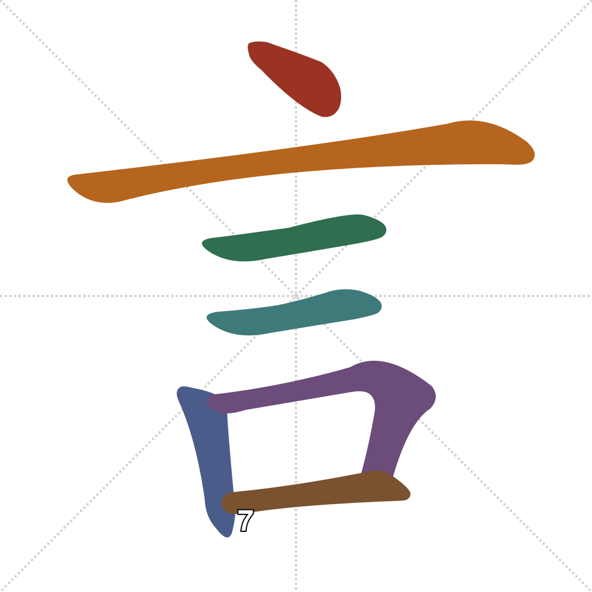
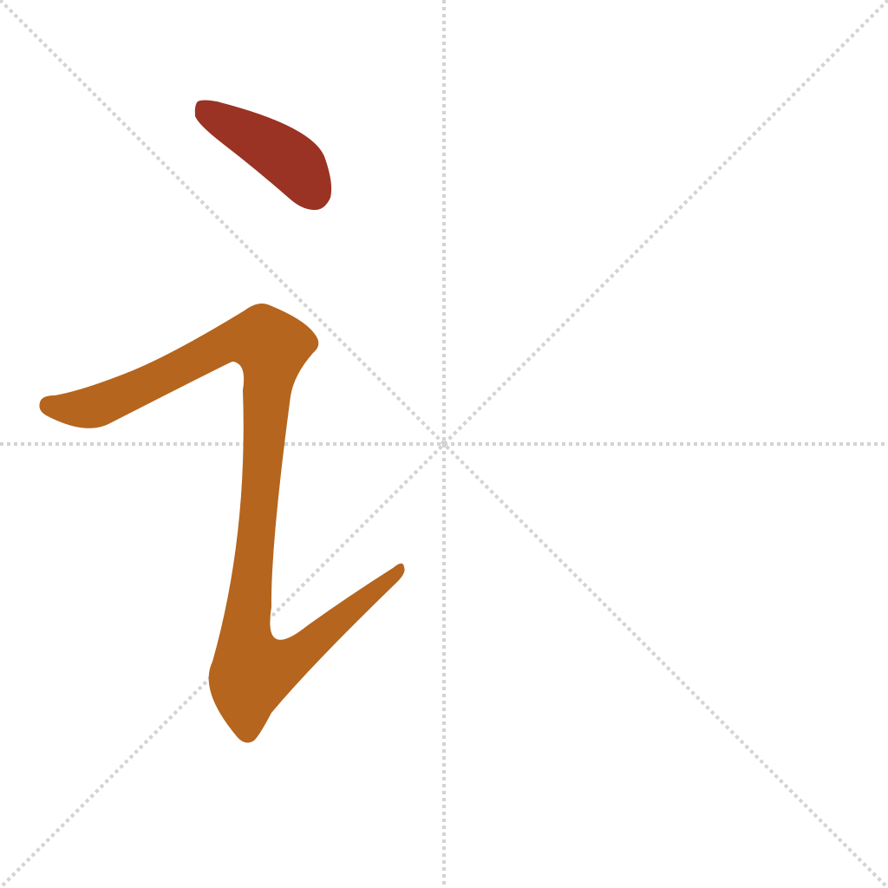

Lesson 12 · Foundational Components
言 sits inside almost every character about talking, asking, telling, and naming — one of the most productive semantic components in the script, on par with 手 and 心 from Lesson 11. Like those two, it contracts into a narrower left-side form when it combines with other pieces. Its full form also builds on a component you already know: 口 (mouth), from Lesson 1.
Quick recall — click the card to flip it:
A dot and two short horizontals form the top, then the frame closes like 口 at the bottom:

A dot, then a single rising stroke:

说 pairs 讠 with a phonetic partner, the same pattern as 钱 in Lesson 10 and 打/快 in Lesson 11:
shuō — to speak, to say, to explain. 讠 is the semantic element; 兑 (duì, "to exchange, to redeem" today) is phonetic only, named for accuracy and not entering the component pool. (Wiktionary: 说)
请 pairs 讠 the same way:
qǐng — please; to request, to invite. 讠 is the semantic element; 青 (qīng, "blue, green" today) is phonetic only, named for accuracy and not entering the component pool. (Wiktionary: 请)
谢 follows the same pattern:
xiè — to thank; to decline. 讠 is the semantic element; 射 (shè, "to shoot" today) is phonetic only, named for accuracy and not entering the component pool. Doubled up as 谢谢 (xièxie), it's the everyday word for "thank you." (Wiktionary: 谢)
言 combines 口 (mouth) with a mark meaning:
讠 is the contracted left-side form of which full character?
In 说 (讠+兑), 兑 functions as:
谢谢 (xièxie) is the everyday way to say:
Etymology sources for every character above are linked inline. For the rigorous version of any of them, see the Outlier Dictionary of Chinese Characters.
Out in the world: 请勿吸烟 (qǐng wù xī yān, "no smoking") is one of the most common notices in China — you can already read 请 ("please") at the front of it. 谢谢惠顾 (xièxie huìgù, "thank you for your patronage") is printed on shop doors and receipts everywhere, opening with the 谢谢 you just learned.
Something unclear, or want to go deeper on any of this? Ask your teacher — that's what these sessions are for.